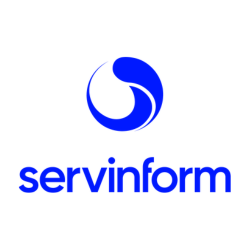
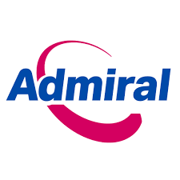
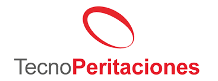

Perfil profesional
Especialista con más de 5 años de experiencia en gestión de vulnerabilidades en medianas y grandes empresas, desde la detección, análisis y triaje hasta la comunicación y seguimiento continuo de la remediación, eliminando falsos positivos y mejorando la trazabilidad de los procesos.
Experiencia en automatización de procesos para VM y alto conocimiento de marcos UNE-EN ISO/IEC 27001:2023 y ENS (categoría ALTA). Manejo profesional e instrumentación vía APIs de CrowdStrike Falcon, Netskope, Palo Alto, Check Point, F5 (Big-IP / Distributed Cloud) y Greenbone (OpenVAS) en entornos corporativos.
Vida laboral
(Noviembre 2024 – Actualidad) - SERVINFORM S.A.
Vulnerability Management. Gestión integral del ciclo de vida de vulnerabilidades en entornos corporativos, utilizando OpenVAS/Greenbone como herramienta principal.

Objetivos conseguidos: Diseño, implantación y consolidación del sistema corporativo de gestión de vulnerabilidades, con infraestructura distribuida on-prem y cloud, automatización completa del ciclo y reducción >70% en tiempos de detección, análisis y remediación. Integración ENS e ISO 27001 y reporting ejecutivo con trazabilidad total.
Labores:
- Implantación desde cero (sondas on-prem y cloud) e integración con entornos corporativos.
- Administración avanzada de OpenVAS/Greenbone (GVMD, GSA, OSPD), políticas de escaneo y troubleshooting.
- Correlación vía APIs (CrowdStrike + OpenVAS) y priorización por CVSS/activo/exposición.
- Automatización (Python/Bash): descarga masiva, normalización (XML/CSV/JSON) y reporting.
- Integración con Redmine (SLA, ENS, ISO 27001).
- Informes técnicos y ejecutivos.
(Abril 2023 – Noviembre 2024) — WESTCON EUROPE
Analista de Seguridad Perimetral (Oficina técnica NIAE) - SSPA (SAS)
Objetivos conseguidos: Endurecimiento perimetral y balanceo en servicios críticos del SSPA con Check Point, Palo Alto, F5 Big-IP (LTM/GTM/APM), F5 Distributed Cloud, Bluecoat, Netskope y Arcsight. Migración masiva de publicaciones a F5 con iRules/políticas personalizadas.
(Noviembre 2021 – Abril 2023) — EUIGS (ADMIRAL SEGUROS)
SOC Analyst

Objetivos conseguidos: TSR en AWS/on-prem, pentesting controlado y monitorización proactiva (SIEM, firewalls, DNS, WAF, EDRs, Google Admin, Libra Esva) y TI externa.
(Septiembre 2020 – Noviembre 2021) — PERITACIONES TECNOLÓGICAS E INFORMÁTICAS (Tecnoperitaciones)
Coordinación del equipo de Ciberseguridad

Objetivos conseguidos: Área de hacking/auditoría; metodologías; endurecimiento; forense y pericial con cadena de custodia.
(Febrero 2008 – Septiembre 2020) — SITEL IBÉRICA TELESERVICES
Soporte técnico (Yacom / Orange)
Labores: Backoffice y resolución de incidencias técnicas.
Conocimientos técnicos
SIEM, monitorización y detección
ArcSightElastic SIEMWazuh
Amazon GuardDutyCloudWatch/CloudTrail
Microsoft Sentinel (nociones)Splunk (nociones)
Gestión de vulnerabilidades y EDR
OpenVAS/GreenboneCrowdStrike Falcon
NessusAcunetixSecurityScoreCard
PanoraysTaniumHarmony
Seguridad perimetral, SASE y firewalling
NetskopePalo Alto
Check PointFortinet
Symantec BluecoatF5 Big-IP
F5 Distributed CloudAllot
WAF, IDS/IPS y protección avanzada
Imperva WAFSnortSuricata
Cisco Umbrella DNSAWS Inspector
Automatización, scripting y desarrollo
PythonBashPowerShell
REST APIsJSON/CSV/XML
Workflows VMReporting & Integración
Gestión de incidentes, ITSM y GRC
RedmineEasyVistaJiraENSISO 27001NISTSLA
Auditoría, pentesting y forense
Auditorías redes & ADForensic
OSINTInformes periciales